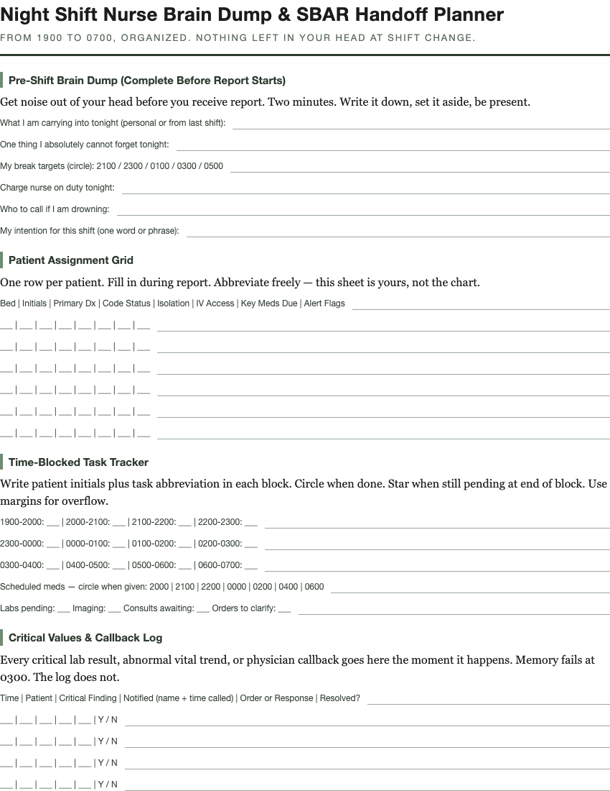

Night Shift Nurse Brain Dump & SBAR Handoff Planner
For 12-hour night-shift hospital nurses (1900–0700)

$7 · instant PDF download
Buy on Payhip
Buy on Gumroad
A print-ready one-sheet-per-shift system built around how night nurses actually work. Print seven copies, clip them to your clipboard, and walk off report with zero open loops.
What's inside
- Pre-shift brain dump — complete before report starts
- Patient assignment grid
- Time-blocked task tracker
- Critical values & callback log
- SBAR handoff block — one copy per patient
- End-of-shift checklist with a hard stop at 0645
- Post-shift wind-down protocol
Format
Delivered as a US Letter print-ready PDF. Print single- or double-sided, reuse every shift. Instant download after checkout.
Related: night shift nurse planner, SBAR handoff template printable, nurse brain sheet, ICU nurse worksheet, 12 hour shift tracker, nursing report sheet printable, RN handoff cheat sheet, rotating shift nurse planner.